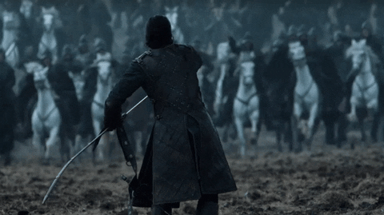
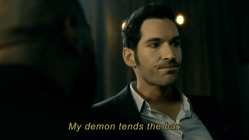

The Witcher é uma nova série de fantasia inspirada na série de livros de mesmo nome, do autor Andrzej Sapkowski. Ela conta a história do protagonista Geralt de Rívia, um dos últimos bruxos
restantes na terra e caçador de monstros. Apesar de relativamente nova, a série fez um grande sucesso dentro da plataforma de streaming e já garantiu sua renovação para a segunda temporada.
The Witcher é uma nova série de fantasia inspirada na série de livros de mesmo nome, do autor Andrzej Sapkowski. Ela conta a história do protagonista Geralt de Rívia, um dos últimos bruxos restantes na terra e caçador de monstros. Apesar de relativamente nova, a série fez um grande sucesso dentro da plataforma de streaming e já garantiu sua renovação para a segunda temporada.
• Número de temporadas: 1 Temporada
• Emissora: Original Netflix
• Onde Assistir: Disponível na Netflix
The Game Of Thrones, inspirada na série de livros "A Song Of Ice and Fire" de George R.R. Martin. A série, que é a segunda mais assistida do mundo, conta a história de um mundo paralelo
medieval onde reis e rainhas lutam em busca de um só objetivo: chegar ao trono. Repleta de lutas políticas e batalhas, Game of Thrones já é vencedora de 12 Emmys e um globo de ouro.

The Game Of Thrones, inspirada na série de livros "A Song Of Ice and Fire" de George R.R. Martin. A série, que é a segunda mais assistida do mundo, conta a história de um mundo paralelo medieval onde reis e rainhas lutam em busca de um só objetivo: chegar ao trono. Repleta de lutas políticas e batalhas, Game of Thrones já é vencedora de 12 Emmys e um globo de ouro.
• Número de temporadas: 8 Temporadas
• Emissora: HBO
• Onde Assistir: Disponível na HBO GO
Lúcifer conta a história de um demônio que abandona sua morada no inferno para admnistrar um clube noturno em Los Angeles. Logo, ele acaba envolvido na polícia local e passa a usar
de seus poderes para resolver crimes engenhosos. A série chegou a ser cancelada pela emissora em maio de 2018, mas o apelo dos fãs ajudou os direitos a serem comprados pela Netflix.

Lúcifer conta a história de um demônio que abandona sua morada no inferno para admnistrar um clube noturno em Los Angeles. Logo, ele acaba envolvido na polícia local e passa a usar de seus poderes para resolver crimes engenhosos. A série chegou a ser cancelada pela emissora em maio de 2018, mas o apelo dos fãs ajudou os direitos a serem comprados pela Netflix.
• Número de temporadas: 4 Temporadas
• Emissora: Fox/Netflix
• Onde Assistir: Disponível na Netflix